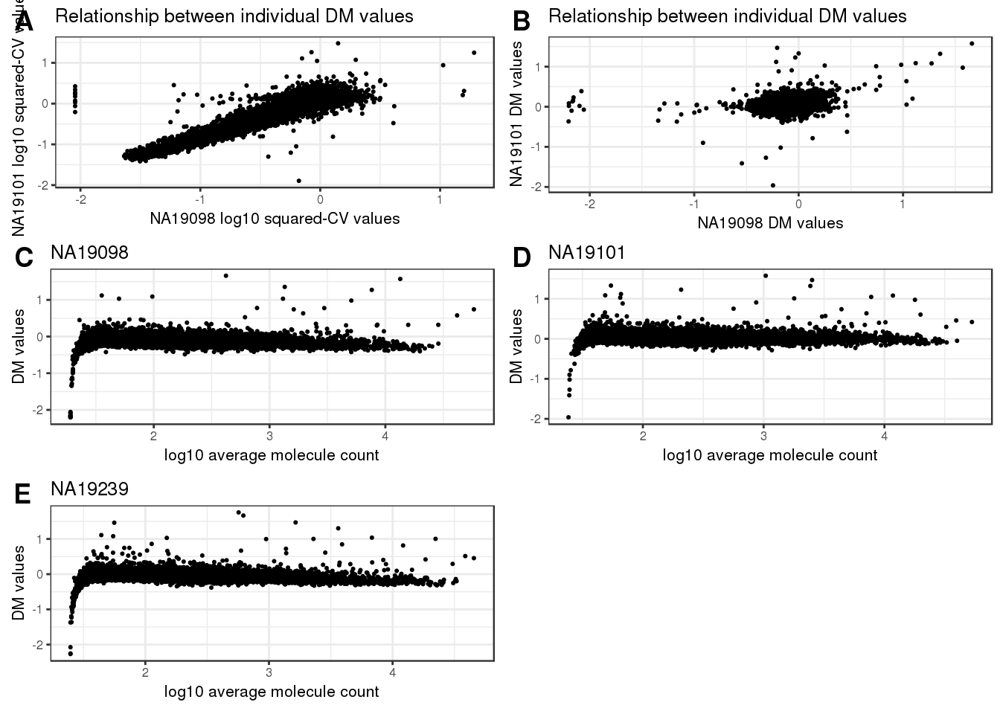
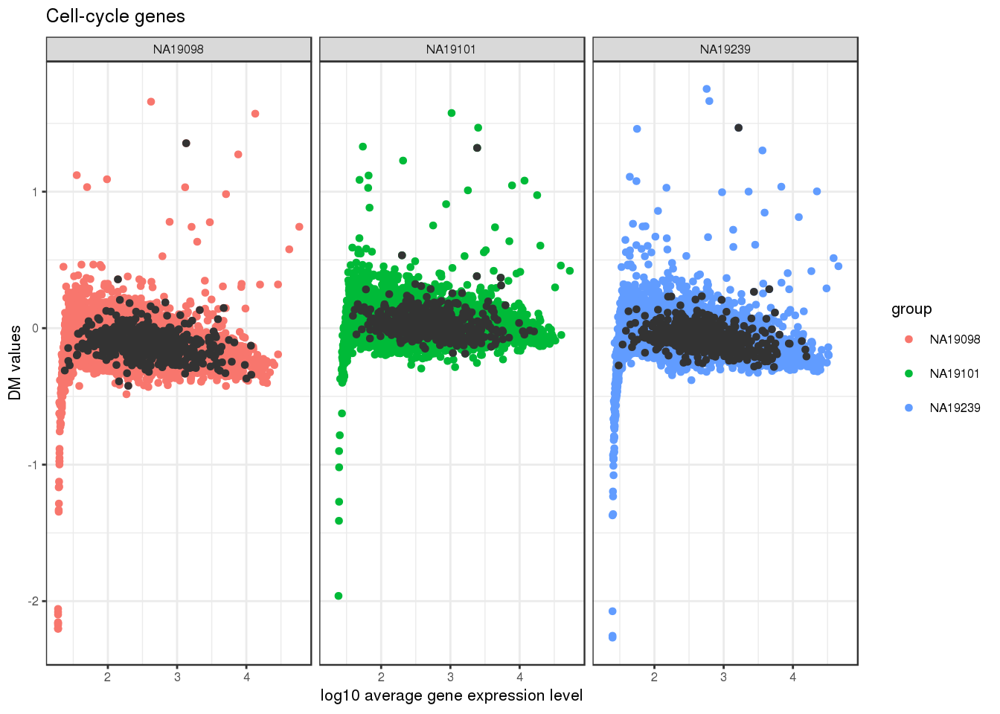
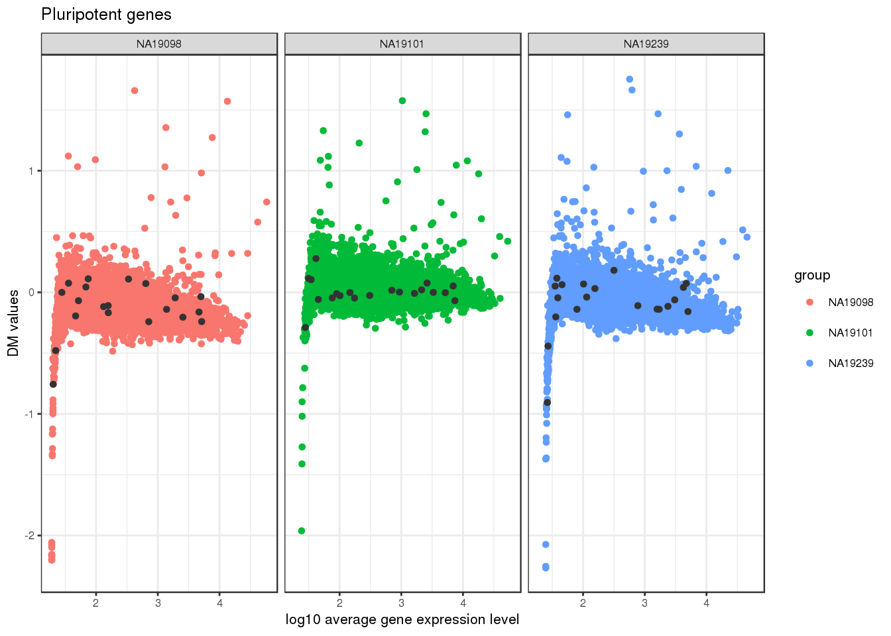
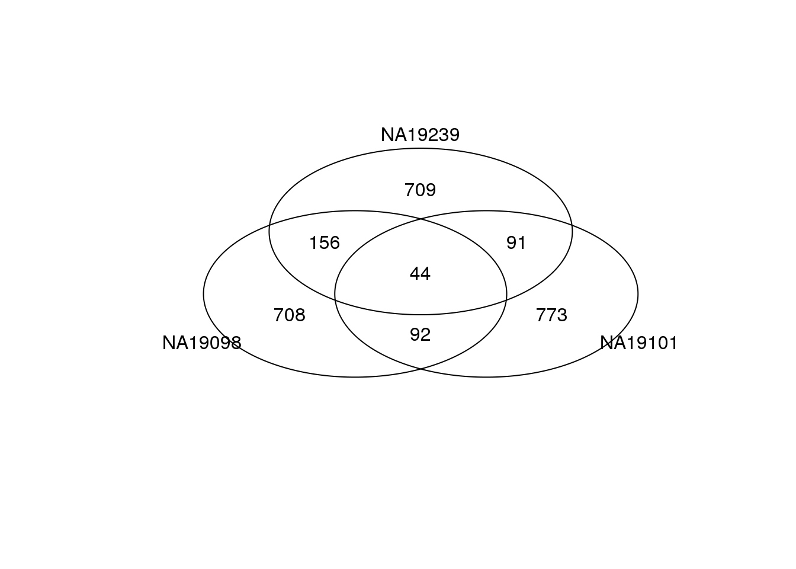
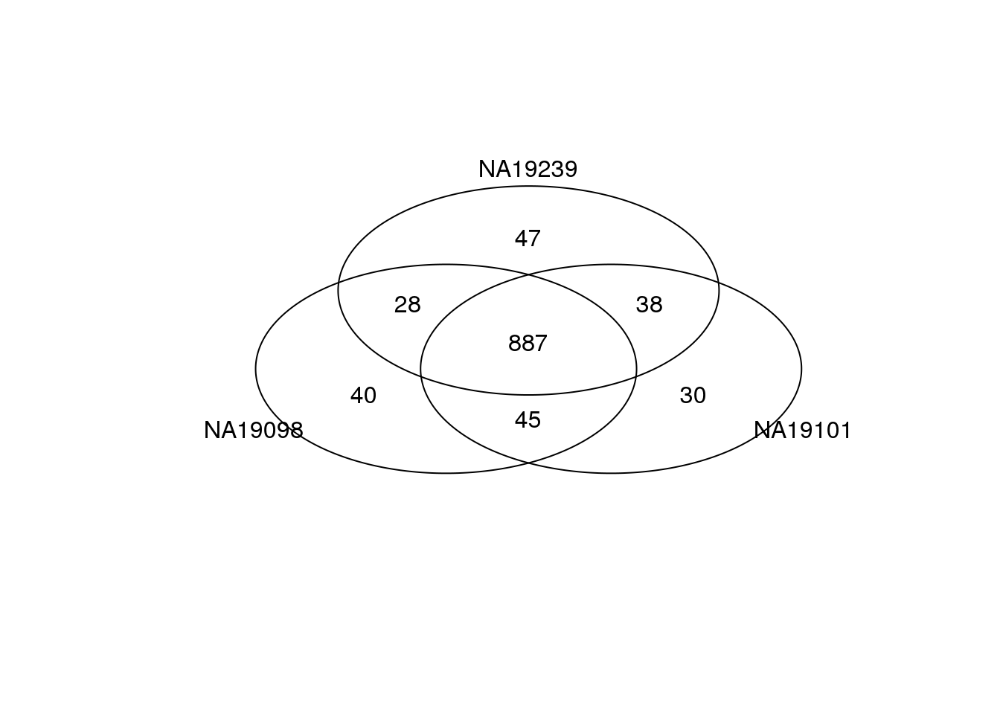
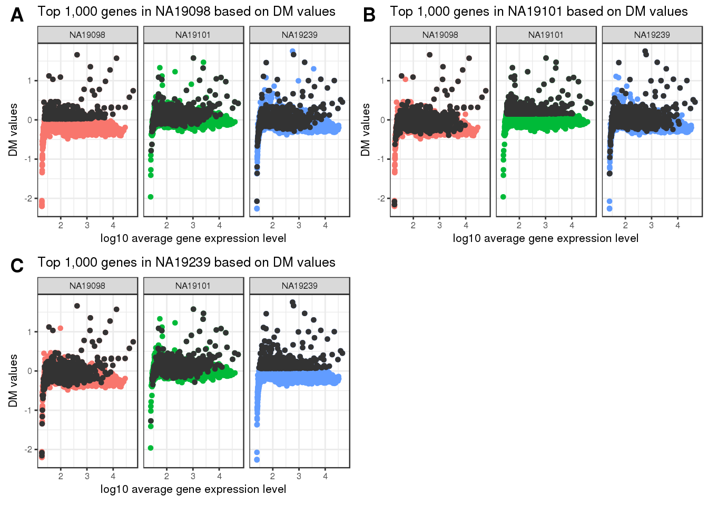

Last updated: 2017-02-24
Code version: 0506d1c
Work through some of this to get a better understanding of the data used for cell-cell variation.
Prliminary investigation into expresssion noise at the transcriptional level. We looked at expression noise across all cells, including the cell that were not detected in the experiment. The investigation begins with coefficeint of variation- a popular measure for quantifying variation of the data.
Coputation of CV: We were interested in the variation in our batch corrected data. But since these data are log-2 transformed counts we take 2 to the power of log transformed counts and then compute a CV based on these corrected counts.
Corrected CV: Because in seqeuncing data, CVs are confounded with abundance levels, we performed a calculations that transformed each CV into a measure of deviation from the median of the CVs from the gene of similar abundance.
library("data.table")
library("dplyr")
library("limma")
library("edgeR")
library("ggplot2")
library("grid")
theme_set(theme_bw(base_size = 12))
source("../../singleCellSeq/analysis/functions.R")
library("Humanzee")
library("cowplot")
library("MASS")
library("matrixStats")
library("mygene")Input annotation of only QC-filtered singel cells, with NA19098.r2 removed.
anno_filter<- read.table("../data/annotation-filter.txt", header=TRUE, stringsAsFactors = FALSE)
dim(anno_filter)[1] 564 5head(anno_filter) individual replicate well batch sample_id
1 NA19098 r1 A01 NA19098.r1 NA19098.r1.A01
2 NA19098 r1 A02 NA19098.r1 NA19098.r1.A02
3 NA19098 r1 A04 NA19098.r1 NA19098.r1.A04
4 NA19098 r1 A05 NA19098.r1 NA19098.r1.A05
5 NA19098 r1 A06 NA19098.r1 NA19098.r1.A06
6 NA19098 r1 A07 NA19098.r1 NA19098.r1.A07Import molecule counts after filtering and before any correction.
molecules_filter<- read.table("../data/molecules-filter.txt", header = TRUE, stringsAsFactors = FALSE)
stopifnot(NROW(anno_filter) == NCOL(molecules_filter))Import final processed molecule counts of endogenous genes.
molecules_final <- read.table("../data/molecules-final.txt",
header = TRUE, stringsAsFactors = FALSE)
dim(molecules_final)[1] 13058 564stopifnot(NROW(anno_filter) == NCOL(molecules_final))Import gene symbols
gene_symbols <- read.table(file = "../../singleCellSeq/data/gene-info.txt", sep = "\t",
header = TRUE, stringsAsFactors = FALSE, quote = "")Import cell cycle and pluripotency genes.
cell_cycle_genes <- read.table("../../singleCellSeq/data/cellcyclegenes.txt",
header = TRUE, sep = "\t",
stringsAsFactors = FALSE)
pluripotency_genes <- read.table("../../singleCellSeq/data/pluripotency-genes.txt",
header = TRUE, sep = "\t",
stringsAsFactors = FALSE)$Totheme_set(theme_bw(base_size = 8))
plot_grid(
ggplot(data.frame(log10cv_1 = log10(ENSG_cv_adj$NA19098$cv^2),
log10cv_2 = log10(ENSG_cv_adj$NA19101$cv^2)),
aes(x = log10cv_1, y = log10cv_2)) +
geom_point(cex = .4) +
xlab("NA19098 log10 squared-CV values") +
ylab("NA19101 log10 squared-CV values") +
ggtitle("Relationship between individual DM values") +
theme(legend.position = "none"),
ggplot(data.frame(dm1 = ENSG_cv_adj$NA19098$log10cv2_adj,
dm2 = ENSG_cv_adj$NA19101$log10cv2_adj),
aes(x = dm1, y = dm2)) +
geom_point(cex = .4) +
xlab("NA19098 DM values") +
ylab("NA19101 DM values") +
ggtitle("Relationship between individual DM values") +
theme(legend.position = "none"),
ggplot(data.frame(dm = ENSG_cv_adj$NA19098$log10cv2_adj,
log10_mean = log10(ENSG_cv_adj$NA19098$mean)),
aes(x = log10_mean, y = dm)) +
geom_point(cex = .4) +
xlab("log10 average molecule count") +
ylab("DM values") +
ggtitle("NA19098") +
theme(legend.position = "none"),
ggplot(data.frame(dm = ENSG_cv_adj$NA19101$log10cv2_adj,
log10_mean = log10(ENSG_cv_adj$NA19101$mean)),
aes(x = log10_mean, y = dm)) +
geom_point(cex = .4) +
xlab("log10 average molecule count") +
ylab("DM values") +
ggtitle("NA19101") +
theme(legend.position = "none"),
ggplot(data.frame(dm = ENSG_cv_adj$NA19239$log10cv2_adj,
log10_mean = log10(ENSG_cv_adj$NA19239$mean)),
aes(x = log10_mean, y = dm)) +
geom_point(cex = .4) +
xlab("log10 average molecule count") +
ylab("DM values") +
ggtitle("NA19239") +
theme(legend.position = "none"),
ncol = 2,
labels = LETTERS[1:5] )
Mark cell-cycle genes
genes <- rownames(ENSG_cv[[1]])
ii_cellcycle_genes <- lapply(1:3, function(per_individual) {
genes %in% unlist(cell_cycle_genes)
})
names(ii_cellcycle_genes) <- names(ENSG_cv)[1:3]
ii_cellcycle_genes <- do.call(c, ii_cellcycle_genes)
ggplot(data.frame(do.call(rbind, ENSG_cv_adj[1:3]),
dm = c(ENSG_cv_adj$NA19098$log10cv2_adj,
ENSG_cv_adj$NA19101$log10cv2_adj,
ENSG_cv_adj$NA19239$log10cv2_adj) ),
aes(x = log10(mean), y = dm )) +
geom_point(aes(col = group), cex = 1.2) + facet_wrap( ~ group) +
ggtitle("Cell-cycle genes") +
geom_point(
data = subset(data.frame(do.call(rbind, ENSG_cv_adj[1:3]),
dm = c(ENSG_cv_adj$NA19098$log10cv2_adj,
ENSG_cv_adj$NA19101$log10cv2_adj,
ENSG_cv_adj$NA19239$log10cv2_adj) ),
ii_cellcycle_genes),
colour = "grey20", cex = 1.2) +
labs(x = "log10 average gene expression level",
y = "DM values")
Mark pluripotent genes
ii_pluripotent_genes <- lapply(1:3, function(per_individual) {
genes %in% unlist(pluripotency_genes)
})
names(ii_pluripotent_genes) <- names(ENSG_cv)[1:3]
ii_pluripotent_genes <- do.call(c, ii_pluripotent_genes)
ggplot(data.frame(do.call(rbind, ENSG_cv_adj[1:3]),
dm = c(ENSG_cv_adj$NA19098$log10cv2_adj,
ENSG_cv_adj$NA19101$log10cv2_adj,
ENSG_cv_adj$NA19239$log10cv2_adj) ),
aes(x = log10(mean), y = dm )) +
geom_point(aes(col = group), cex = 1.2) + facet_wrap( ~ group) +
ggtitle("Pluripotent genes") +
geom_point(
data = subset(data.frame(do.call(rbind, ENSG_cv_adj[1:3]),
dm = c(ENSG_cv_adj$NA19098$log10cv2_adj,
ENSG_cv_adj$NA19101$log10cv2_adj,
ENSG_cv_adj$NA19239$log10cv2_adj) ),
ii_pluripotent_genes),
colour = "grey20", cex = 1.2) +
labs(x = "log10 average gene expression level",
y = "DM values")
Top 1000 genes based on DM (coeficient of variance corrected for dependence on expression)
genes<- rownames(ENSG_cv[1])
library(gplots)
# venn_cv_rank <- gplots::venn(
# list(NA19098 = genes[ which( rank(ENSG_cv_adj$NA19098$log10cv2_adj)
# > length(genes) - 1000 ) ],
# NA19101 = genes[ which( rank(ENSG_cv_adj$NA19101$log10cv2_adj)
# > length(genes) - 1000 ) ],
# NA19239 = genes[ which( rank(ENSG_cv_adj$NA19239$log10cv2_adj)
# > length(genes) - 1000 ) ] ))Bottom 1000 genes based on DM.
genes <- rownames(ENSG_cv[[1]])
library(gplots)
gplots::venn(
list(NA19098 = genes[ which( rank(ENSG_cv_adj$NA19098$log10cv2_adj)
<= 1000 ) ],
NA19101 = genes[ which( rank(ENSG_cv_adj$NA19101$log10cv2_adj)
<= 1000 ) ],
NA19239 = genes[ which( rank(ENSG_cv_adj$NA19239$log10cv2_adj)
<= 1000 ) ] ))
Top 1000 genes based on means.
genes <- rownames(ENSG_cv[[1]])
library(gplots)
gplots::venn(
list(NA19098 = genes[ which(rank(ENSG_cv[[1]]$mean) > length(genes) - 1000 ) ],
NA19101 = genes[ which(rank(ENSG_cv[[2]]$mean) > length(genes) - 1000 ) ],
NA19239 = genes[ which(rank(ENSG_cv[[3]]$mean) > length(genes) - 1000 ) ] ) )
Mark top ranked genes based on individual DM values.
df_plot <- data.frame(
cvs = c(ENSG_cv_adj[[1]]$log10cv2_adj, ENSG_cv_adj[[2]]$log10cv2_adj,
ENSG_cv_adj[[3]]$log10cv2_adj),
means = c(ENSG_cv[[1]]$mean, ENSG_cv[[2]]$mean, ENSG_cv[[3]]$mean),
individual = as.factor(rep(names(ENSG_cv)[1:3], each = NROW(ENSG_cv[[1]])) ) )
cowplot::plot_grid(
ggplot( df_plot,
aes(x = log10(means), y = cvs ) ) +
geom_point( aes(col = as.factor(individual)), cex = 1.2 ) +
facet_wrap( ~ individual) +
labs(x = "log10 average gene expression level",
y = "DM values") +
geom_point(
data = df_plot[ rep( rank(ENSG_cv_adj$NA19098$log10cv2_adj)
> length(genes) - 1000, 3), ],
colour = "grey20", cex = 1.2 ) +
ggtitle("Top 1,000 genes in NA19098 based on DM values") +
theme(legend.position = "none"),
ggplot( df_plot,
aes(x = log10(means), y = cvs ) ) +
geom_point( aes(col = as.factor(individual)), cex = 1.2 ) +
facet_wrap( ~ individual) +
labs(x = "log10 average gene expression level",
y = "DM values") +
geom_point(
data = df_plot[ rep( rank(ENSG_cv_adj$NA19101$log10cv2_adj)
> length(genes) - 1000, 3), ],
colour = "grey20", cex = 1.2 ) +
ggtitle("Top 1,000 genes in NA19101 based on DM values") +
theme(legend.position = "none"),
ggplot( df_plot,
aes(x = log10(means), y = cvs ) ) +
geom_point( aes(col = as.factor(individual)), cex = 1.2 ) +
facet_wrap( ~ individual) +
labs(x = "log10 average gene expression level",
y = "DM values") +
geom_point(
data = df_plot[ rep( rank(ENSG_cv_adj$NA19239$log10cv2_adj)
> length(genes) - 1000, 3), ],
colour = "grey20", cex = 1.2 ) +
ggtitle("Top 1,000 genes in NA19239 based on DM values") +
theme(legend.position = "none"),
labels = LETTERS[1:4] ) 
SKIP SAME ANALYSIS BUT WITH 100 GENES
Analyze top 1000 gene in DM values.
# output top 1000 genes in DM values
top1000DM_genes <-
data.frame(NA19098 = genes[ which( rank(ENSG_cv_adj$NA19098$log10cv2_adj)
> length(genes) - 1000 ) ],
NA19101 = genes[ which( rank(ENSG_cv_adj$NA19101$log10cv2_adj)
> length(genes) - 1000 ) ],
NA19239 = genes[ which( rank(ENSG_cv_adj$NA19239$log10cv2_adj)
> length(genes) - 1000 ) ],
stringsAsFactors = FALSE)
# write the gene names out to a text file,
# then copy and paste to GO Consortium interface
for (ind in c("NA19098", "NA19101", "NA19239")) {
write.table(top1000DM_genes[[ind]],
file = paste0("../data/top-1000-dm-",ind,".txt"),
sep = "/t", quote = FALSE,
col.names = FALSE, row.names = FALSE)
}
write.table(rownames(molecules_final),
file = "../data/gene-names.txt",
sep = "/t", quote = FALSE,
col.names = FALSE, row.names = FALSE)We found no significant GO terms in PANTHER database.
ConsensusPATHDB-Human was used to perform GO over-representation analysis.
show example for 1 individaul here
NA19098
# go_NA19098 <-
# read.table("figure/cv-adjusted-summary-pois.Rmd/go-cpdb-top-1000-dm-NA19098.tab",
# sep = "\t",
# header = TRUE)
# go_NA19098_sig <- go_NA19098[go_NA19098$q.value < .1, ]
# go_NA19098_sig$term_nameCompute median of absolute deviations (MAD) to quantify dissimilarity of the individual DM meausres.
library(matrixStats)
dm_matrix <- as.matrix(
data.frame(NA19098 = ENSG_cv_adj$NA19098$log10cv2_adj,
NA19101 = ENSG_cv_adj$NA19101$log10cv2_adj,
NA19239 = ENSG_cv_adj$NA19239$log10cv2_adj) )
mad <- rowMedians( abs( dm_matrix - rowMedians(dm_matrix) ) )ConsensusPATHDB-Human was used to perform GO over-representation analysis.
Look up top 100 genes in MAD values
mad_genes <- rownames(molecules_final)[rank(mad) >
(length(mad) - 100) ]
#write.table(mad_genes,
# file = "../data/mad-genes.txt",
# sep = "\t", quote = FALSE,
# col.names = FALSE, row.names = FALSE)# library(mygene)
# go_top <- read.table("figure/cv-adjusted-summary-pois.Rmd/go-cpdb-all-top.tab",
# sep = "\t",
# header = TRUE)
# go_top <- go_top[go_top$q.value < .1, ]
# as.character(go_top$term_name)# go_top_genes <- getGenes(gsub(";", ",",
# as.character(go_top$members_input_overlap_geneids)))
# go_top_genes <- go_top_genes[!duplicated(go_top_genes[ , "symbol"]), ]
# kable(data.frame(symbol =go_top_genes[ ,"symbol"],
# name = go_top_genes[,"name"]) )sessionInfo()R version 3.3.2 (2016-10-31)
Platform: x86_64-redhat-linux-gnu (64-bit)
Running under: Scientific Linux 7.2 (Nitrogen)
locale:
[1] LC_CTYPE=en_US.UTF-8 LC_NUMERIC=C
[3] LC_TIME=en_US.UTF-8 LC_COLLATE=en_US.UTF-8
[5] LC_MONETARY=en_US.UTF-8 LC_MESSAGES=en_US.UTF-8
[7] LC_PAPER=en_US.UTF-8 LC_NAME=C
[9] LC_ADDRESS=C LC_TELEPHONE=C
[11] LC_MEASUREMENT=en_US.UTF-8 LC_IDENTIFICATION=C
attached base packages:
[1] stats4 parallel grid stats graphics grDevices utils
[8] datasets methods base
other attached packages:
[1] broman_0.65-1 scales_0.4.1 gplots_3.0.1
[4] lmtest_0.9-35 zoo_1.7-14 VennDiagram_1.6.17
[7] futile.logger_1.4.3 mygene_1.10.0 GenomicFeatures_1.26.2
[10] AnnotationDbi_1.36.1 Biobase_2.34.0 GenomicRanges_1.26.2
[13] GenomeInfoDb_1.10.3 IRanges_2.8.1 S4Vectors_0.12.1
[16] BiocGenerics_0.20.0 matrixStats_0.51.0 MASS_7.3-45
[19] Humanzee_0.1.0 edgeR_3.16.5 limma_3.30.9
[22] dplyr_0.5.0 data.table_1.10.0 workflowr_0.3.0
[25] rmarkdown_1.3 testit_0.6 cowplot_0.7.0
[28] ggplot2_2.2.1
loaded via a namespace (and not attached):
[1] nlme_3.1-128 bitops_1.0-6
[3] RColorBrewer_1.1-2 httr_1.2.1
[5] rprojroot_1.2 tools_3.3.2
[7] backports_1.0.5 R6_2.2.0
[9] rpart_4.1-10 KernSmooth_2.23-15
[11] Hmisc_4.0-2 DBI_0.5-1
[13] lazyeval_0.2.0 mgcv_1.8-15
[15] colorspace_1.3-2 nnet_7.3-12
[17] gridExtra_2.2.1 git2r_0.18.0
[19] chron_2.3-49 htmlTable_1.9
[21] rtracklayer_1.34.1 labeling_0.3
[23] caTools_1.17.1 checkmate_1.8.2
[25] stringr_1.1.0 digest_0.6.12
[27] Rsamtools_1.26.1 foreign_0.8-67
[29] XVector_0.14.0 base64enc_0.1-3
[31] htmltools_0.3.5 htmlwidgets_0.8
[33] RSQLite_1.1-2 jsonlite_1.2
[35] BiocParallel_1.8.1 gtools_3.5.0
[37] acepack_1.4.1 RCurl_1.95-4.8
[39] magrittr_1.5 Formula_1.2-1
[41] Matrix_1.2-7.1 Rcpp_0.12.9
[43] munsell_0.4.3 proto_1.0.0
[45] sqldf_0.4-10 yaml_2.1.14
[47] stringi_1.1.2 SummarizedExperiment_1.4.0
[49] zlibbioc_1.20.0 plyr_1.8.4
[51] gdata_2.17.0 lattice_0.20-34
[53] Biostrings_2.42.1 splines_3.3.2
[55] locfit_1.5-9.1 knitr_1.15.1
[57] biomaRt_2.30.0 futile.options_1.0.0
[59] XML_3.98-1.5 evaluate_0.10
[61] latticeExtra_0.6-28 lambda.r_1.1.9
[63] gtable_0.2.0 assertthat_0.1
[65] gsubfn_0.6-6 survival_2.40-1
[67] tibble_1.2 GenomicAlignments_1.10.0
[69] memoise_1.0.0 cluster_2.0.5 This site was created with R Markdown